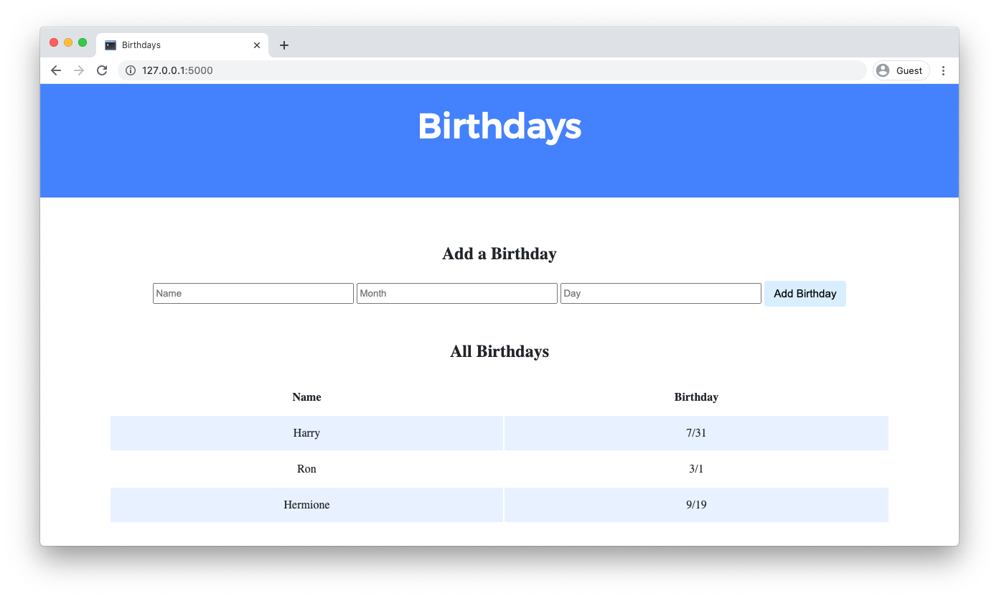

Lab 9: 生日
You are 欢迎 to collaborate with one or two classmates on this lab, though it is expected that every student in any such group contribute equally to the lab.
Create a web application to keep track of friends’ 生日.

入门
Here’s how to 下载 this lab into your own CS50 IDE. Log into CS50 IDE and then, in a terminal window, execute each of the below.
- Execute
cdto ensure that you’re in~/(i.e., your 首页 directory, aka~). - Execute
wget https://cdn.cs50.net/2020/fall/labs/9/lab9.zipto 下载 a (compressed) ZIP file with this problem’s distribution. - Execute
unzip lab9.zipto uncompress that file. - Execute
rm lab9.zipfollowed byyesoryto delete that ZIP file. - Execute
ls. You should see a directory calledlab9, which was inside of that ZIP file. - Execute
cd lab9to change into that directory. - Execute
ls. You should see anapplication.pyfile, abirthdays.dbfile, astaticdirectory, and atemplatesdirectory.
Understanding
In application.py, you’ll find the start of a Flask web application. The application has one route (/) that accepts both POST requests (after the if) and GET requests (after the else). Currently, when the / route is requested via GET, the index.html template is rendered. When the / route is requested via POST, the user is redirected 返回 to / via GET.
birthdays.db is a SQLite database with one table, birthdays, that has four columns: id, name, month, and day. There are a few rows already in this table, though ultimately your web application will support the ability to insert rows into this table!
In the static directory is a styles.css file containing the CSS code for this web application. No need to edit this file, though you’re 欢迎 to if you’d like!
In the templates directory is an index.html file that will be rendered when the user views your web application.
实现细节
Complete the implementation of a web application to let users store and keep track of 生日.
- When the
/route is requested viaGET, your web application should display, in a table, all of the people in your database along with their 生日.- First, in
application.py, add logic in yourGETrequest handling to query thebirthdays.dbdatabase for all 生日. Pass all of that data to yourindex.htmltemplate. - Then, in
index.html, add logic to render each birthday as a row in the table. Each row should have two columns: one column for the person’s 姓名 and another column for the person’s birthday.
- First, in
- When the
/route is requested viaPOST, your web application should add a new birthday to your database and then re-render the index page.- First, in
index.html, add an HTML form. The form should let users type in a 姓名, a birthday month, and a birthday day. Be sure the form submits to/(its “action”) with a method ofpost. - Then, in
application.py, add logic in yourPOSTrequest handling toINSERTa new row into thebirthdaystable based on the data supplied by the user.
- First, in
Optionally, you 五月 also:
- Add the ability to delete and/or edit birthday entries.
- Add any additional features of your choosing!
提示
- Recall that you can call
db.executeto execute SQL queries withinapplication.py.- If you call
db.executeto run aSELECTquery, recall that the function will return to you a list of dictionaries, where each dictionary represents one row returned by your query.
- If you call
- You’ll likely find it helpful to pass in additional data to
render_template()in yourindexfunction so that access birthday data inside of yourindex.htmltemplate. - Recall that the
trtag can be used to create a table row and thetdtag can be used to create a table data cell. - Recall that, with Jinja, you can create a
forloop inside yourindex.htmlfile. - In
application.py, you can obtain the dataPOSTed by the user’s form submission viarequest.form.get(field)wherefieldis a string representing thenameattribute of aninputfrom your form.- For 示例, if in
index.html, you had an<input name="foo" type="text">, you could userequest.form.get("foo")inapplication.pyto extract the user’s input.
- For 示例, if in
测试
No check50 for this lab! But be sure to test your web application by adding some 生日 and ensuring that the data appears in your table as expected.
Run flask run in your terminal while in your lab9 directory to start a web server that serves your Flask application.
如何提交
- 下载 a ZIP file of your Flask application by control-clicking on your
lab9folder in CS50 IDE’s file browser and choosing 下载. - Go to CS50’s Gradescope page.
- Click “Lab 9: 生日”.
- Drag and drop your
lab9.zipfile to the area that says “Drag & Drop”. - Click “Upload”.
You should see a message that says “Lab 9: 生日 submitted successfully!”